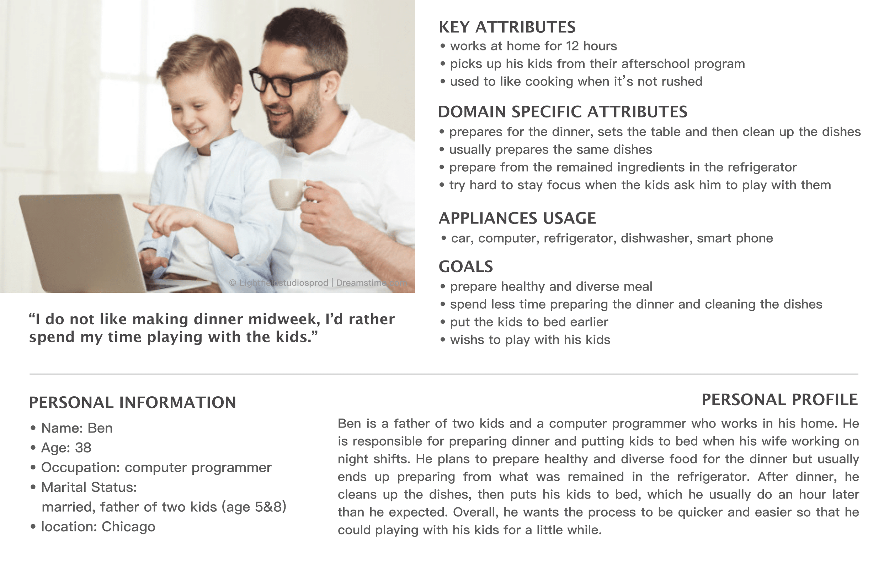

Making Sense of Data
| Column 1 | Column 2 |
|---|---|
| Project Goal | Utilize different analytical techniques to interpret the emotion, intention and goals of users based on their experiences. |
| Project Summary | Based on an interview transcript of a busy father’s experience preparing dinner, I created a persona to specify his characteristics and a journey map of the dinner preparation process to interpret key activities,
emotions, and interactions with his children. Next, I identified the areas for potential improvement in the dinner preparing process for both the father and his children.
*This was an assignment in course User Experience: Research & Prototyping by UCSD on Coursera. |
| Column 1 | Column 2 |
|---|---|
| Outcomes | Scored 100% |
| Column 1 | Column 2 |
|---|---|
| UX Methods Used |
|
| Design Tools |
|
Design Process
Start
500-words transcript of an interview
Discover
In the first step of the assignment, I created a persona for the father based on his responses in the interview.
-Persona-There are Key/Domain-Specific Attributes specifying his characteristics and actions (which are closely related to the design goal), Goals outlining what he wanted to achieve, and a Quote reflecting his general attitude and temperament. The Personal Profile is a simple summary reflecting my understanding of his character.
After creating the Persona, I gained a much more concrete, vivid understanding about a user's characteristics at play in a situation, as well as his intentions and habits.
 -Journey Map-
-Journey Map-
I used Sketch to depict the Journey Map of the father and his children's overall dinner preparation experience. I organized the journey map into three parts:
- Actions: general behavior and major actions of the father
- Interactions: interaction between the father and his kids or objects
- Thoughts & Emotions: description of the thoughts, intentions, and words of the father individually or with his children
I also indicated the various appliances and emotional states in the highlighted words.

The final step of the assignment was to identify opportunities for improvement, which includes:
- User is the person we are designing for - in this case, the father.
- Need is the primary needs of the person.
- Insight is the chance for design to come in, and should not be described too rigidly, which would limit the range of ideas.
After identifying areas for change, I was able to come up with five different solutions to improve the father's dinner preparing experience.
Reflection
It is not enough to only be aware of what people say and feel; you should also make the effort to make sense of that data. In this assignment, I learned how to interpret user needs and wants from raw information in a step-by-step manner. After creating the Persona, I gained a deeper understanding about the user and his wants and needs. The journey map also provided a thorough method with which to outline a process in sequence, instead of separate activities. Lastly, the Opportunity Area provided a framework for me to come up with various solutions to help smooth tangles out.
Following this structure, the ideation process became much more tangible.
Peer Reviews
“The way the journey map was laid out: both chronologically and color-coded.There was a lot of information, but the way it was constructed still made it easy to understand everything."
“Love, Love, Love every bit of the submission. Very carefully drafted and presented. A job well done!”